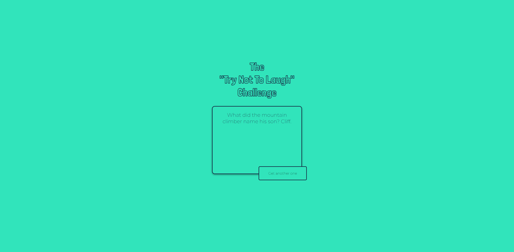

and habit tracking
This web page allows us to add tasks to the To-do list. Each task can be marked as done upon completion or cancel if it is not required.
Completed or canceled tasks are displayed as an icon at the bottom or as a statistical bar graph. The technologies used are: HTML, CSS, JavaScript (localStorage) and chart.js